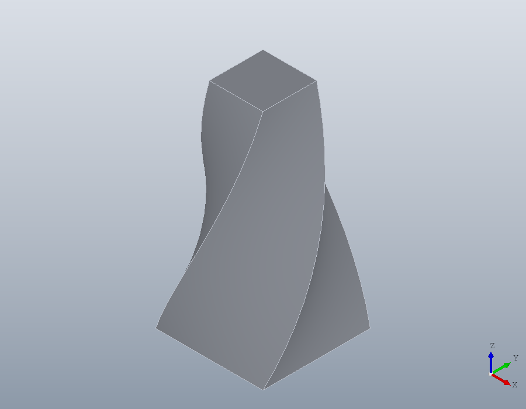

A brief Octave primer
The Octave the tutorials use, for readers coming from OpenSCAD or from another language.
Readers who know MATLAB know nearly all of it already, and need only the last two sections.
Loading the package
A package is installed once, with Open CASCADE in place as the README sets out, and loaded in every session that uses it:
pkg install drafting
pkg load draftingCode is typed at the prompt, or saved in a script, a plain text file ending in .m that runs when its name is typed. Every page of this guide is one. help prints the full reference of any function or class:
help solid.boxNames with a dot
The package keeps its functions and classes in namespaces, one for each of its parts: geom, draw, solid, polymesh and model. On disk a namespace is a folder whose name starts with +, such as +geom. In code it is written with a dot and no +: geom.Region is a class, solid.box a function.
S = solid.box (40, 30, 10);
class (S)ans = solid.ShapeValues, not references
A method is called as a function with the object first, fillet (S, ...), and S.fillet (...) is the same call. Either way it returns a new object and leaves the one it was given unchanged, so a change is kept only by assigning the result:
T = fillet (S, edges (S, 'Direction', [0, 0, 1]), 5);
[numfaces(S), numfaces(T)]ans =
6 10S is still the plain block. Writing S = fillet (S, ...) replaces it, and that is how a part is built up, step by step.
Numbers and points
Numbers come in matrices. Commas separate the elements of a row and semicolons end the rows. A point is a row, so an outline is a matrix of one row for each corner:
P = [0, 0; 60, 0; 60, 40; 0, 40]P =
0 0
60 0
60 40
0 40The commas are optional, so [0 0] is [0, 0], and Octave prints a matrix without them; the guide always writes them. Indices count from 1, end is the last and : is all of them, so P(end,:) is the last corner:
P(end,:)ans =
0 40A colon makes a range, from a start by a step to an end, and linspace a number of points evenly spaced:
x = 0:10:40
linspace (0, 1, 5)x =
0 10 20 30 40
ans =
0 0.2500 0.5000 0.7500 1.0000An operator with a dot works element by element, as .*, ./ and .^ do; without the dot, * is the product of matrices. A ' turns a row into a column.
x .^ 2
x'ans =
0 100 400 900 1600
ans =
0
10
20
30
40Cell arrays
Braces make a cell array, which holds things of any kind and size side by side. A function that can give back several pieces returns them in one: a bar subtracted right across a plate leaves two regions. Braces also take a piece out.
plate = geom.Region ([0, 0; 60, 0; 60, 40; 0, 40]);
bar = geom.Region ([-10, 15; 70, 15; 70, 25; -10, 25]);
pieces = subtract (plate, bar);
numel (pieces)
pieces{1}ans = 2
ans =
geom.Region: an outline of 4 segments, 0 holesWhat is shown
A line ending in a semicolon prints nothing. Without one, the result is shown under its name, or as ans when it has none. Several outputs come back in brackets, and ~ drops one that is not wanted:
n = numfaces (S);
numfaces (S)
[~, L] = bbox (S)ans = 6
L =
40 30 10Options
Options follow the required arguments as pairs, a name in quotes and then its value. The names ignore case, so 'twist' is 'Twist':
sq = geom.Region ([-10, -10; 10, -10; 10, 10; -10, 10]);
twisted = solid.extrude (sq, 40, 'Twist', 90, 'Scale', 0.5);
show (twisted);
Angles
Every angle in the package is in degrees. Octave's sind, cosd and tand take degrees, where sin, cos and tan take radians:
sind (30)
sin (pi / 6)ans = 0.5000
ans = 0.5000Loops, errors and long lines
A loop closes with endfor, a condition with endif, and so on, and a plain end closes any of them too. ... carries a statement on to the next line, and ## or # starts a comment.
pins = solid.Shape ();
for k = 1:4
pin = translate (solid.cylinder (2, 10), [10 * k, 0, 0]);
pins = union (pins, pin);
endfor
numsolids (pins)ans = 4An error stops a script unless it is caught. try runs a block, and catch takes the error, whose message says what was wrong:
try
solid.box (10, -1, 5);
catch err
disp (err.message)
end_try_catchsolid.box: DY must be a positive and finite real scalar.Small functions
@ makes a function in place, from a list of arguments and one expression. Here disc gives a disc of radius r centred at x, a region of two points joined by half circles, as the third column of each point asks:
disc = @(x, r) geom.Region ([x - r, 0, 1; x + r, 0, 1]);
volume (solid.extrude (disc (0, 10), 1))ans = 314.16Spaces and brackets
Octave lets a space stand between a name and its parenthesis, and the guide writes one, numel (x), everywhere but inside brackets and braces. There a space separates elements, so x (2) is two things, x and (2), and the result is silently different:
x = [3, 4, 5];
[x(2), 1]
[x (2), 1]ans =
4 1
ans =
3 4 5 2 1Inside brackets, write a call or an index with no space before its parenthesis.
For MATLAB users
Octave runs most MATLAB code as it is, and the guide uses little that MATLAB lacks: endfor, end_try_catch and the other closing words, and ## comments. The package itself runs in Octave only, since its compiled parts are built for it.